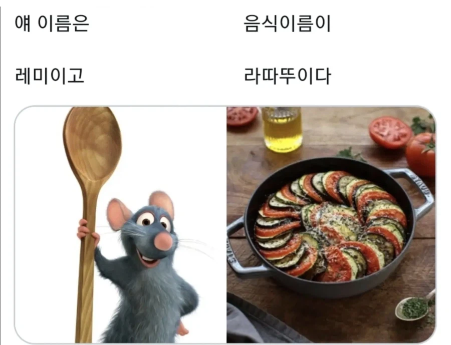

https://m.blog.naver.com/anique_/220720707159
사실 저렇게 생긴 라따뚜이는 다이닝 스타일이고 실제 가정에서 먹는 라따뚜이는 이렇게 생김
가정식이 더 내취향이네
애초에 라따뚜이란게 프랑스 남부에서 남은 야채 때려박고 스톡이랑 토마토소스 넣고 끓인 음식이라 저럼
우리나라로 치면 비빔밥포지션
회사아침으로 항상나오는데 이름은 프랑스어라 기대만들어놀고 고기하나도 없고 매번 실망하는 메뉴임. 걍 프랑스식 토마토 애호박 볶음임 시즈닝도 좆노맛이라 퍼먹지도 않음
라따뚜이는 그냥 프랑스 된장찌개 같은거임
아님
ㄴㄴ
다이나믹 듀오가 부릅니다 어머니의 된장국
라따쿠니
라따뚜이는 이런 맛이구나
우리나라 식으로 제목지으면
잡채
부대찌개
이정도로될라너
가지볶음인데요
야채스튜아님?
아니면 애호박 반찬...??
라 뜌따이..
영화보면 마지막에 나옴
그래서 몇마리 넣으면 됨?
영화에 나오는건 콩피 비알디라는 라따뚜이의 변형
저 라따뚜이도 붉은거 햄이 아니고 토마토임 ㅋㅋ
가지 애호박 토마토로 만드는 좆같이 맛없는 음식임
야채볶음임
야채잡탕 졸라맛있는데
고맙다 라따뚜이야
젤다같은거군
레미는 취업했는데 이름표는 메뉴판에 뺏겼네 ㅋㅋ
라뜌따잇
영화 막판에 평론가가 찍먹하고 과거회상하는 음식이 라따뚜이임ㅋㅋ
ㄹㅇ 저건 파인다이닝이라
어렸을적엔 먹어본적도 없는거임 ㅋㅋ
지랄하지마 그럼 젤다의 전설은 공주 이름이 젤다겠네
유튜브 보니까 프랑스놈들도 걍 라따뚜이라고 하던데 ㅋㅋ
한국으로 따지면 된장찌개라서
다들 된찌 된찌 하는 느낌인가? ㅋㅋ
약간 국민반찬 느낌임 김치보다 하류인 애호박 무침 정도되는 반찬임. 국물 음식이 아님
애호박 무침은 좀 선넘네
주인공이름 링귀니는 파스타면종류임
진짜 배신감은 라따뚜이에는 고기가 안 들어간다는거임
ㅡ0ㅡ
아랐다뚜이
그래서 프랑스 대부분사람들이 이거 자주먹고 없으면 미쳐버림? 김치찌개정도?
랏따투~유~
라따가 스페인어로 쥐라서 "뚜이"라는 이름의 쥐 인줄 알았는데..
라따뚜이는 가지를 맛있게 먹을 수 있는 요리라는점이 차별점임
ㅈ같은 가지무침 말고 라따뚜이 해먹어라 존맛임
밥이랑 먹으면 맛있겠다
고마워 라따뚜이야